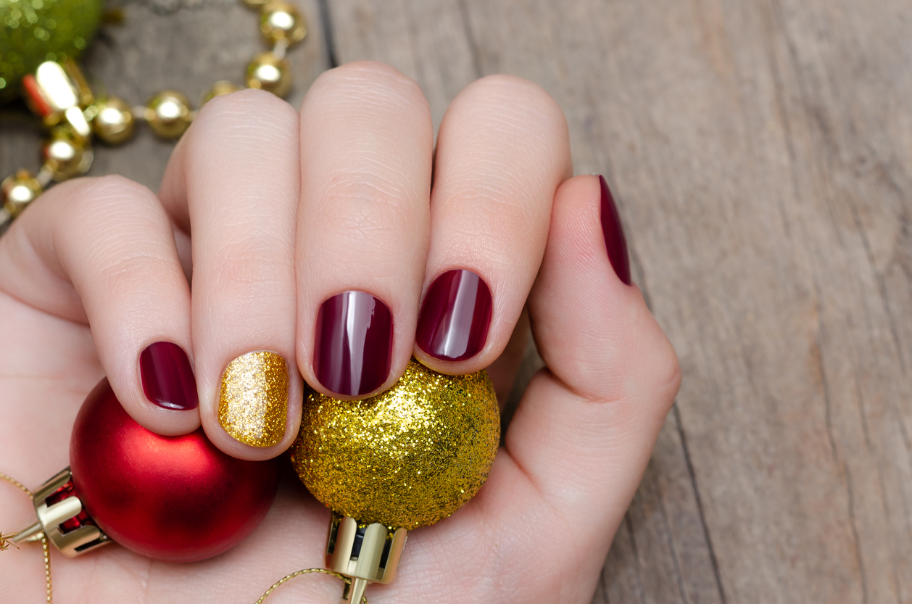

Blog
Unas uñas bien arregladas también forman parte del encanto de la Navidad. Porque no solo el peinado y la
elección de la ropa es importante. Llevar la manicura perfecta
es el mejor complemento que podrías añadirle a tu look. Pero ¿cómo lograr que aguante? Para esto está el
esmaltado semipermanente,
una de las tendencias que más éxito han tenido en los últimos años.
El esmaltado semipermanente para tus uñas te ayudará a que estas duren mucho más tiempo. De hecho, por
asombroso que te parezca, tu manicura lucirá impecable no solo en Navidad, sino incluso en fin de año y hasta
en Reyes. Por lo tanto, es la mejor opción para que tus uñas no se dañen y se mantengan como si acabases de
salir del salón.
Sin embargo, el esmaltado semipermanente para tus uñas no es lo único en lo que debes pensar para esta
Navidad. ¿Ya sabes qué color elegir? ¿Desconoces las tendencias que vienen pisando muy fuerte y que te harán
destacar en la cena de tu empresa? Si no sabes cómo responder a estas preguntas, aquí te dejamos algunas ideas
para que puedas lucir una manicura perfecta estas fiestas.
Los colores de uñas para Navidad
El color protagonista de la Navidad es el rojo, por lo que es una de las primeras opciones que puedes tener en
cuenta para tus uñas. En el caso de que un rojo demasiado llamativo no te permita sentirte del todo cómoda,
opta por un burdeos que es sinónimo de elegancia y siempre queda muy bien.
Sin embargo, si piensas en el árbol de Navidad te darás cuenta de que hay otro color que, también, es
importante ¡el verde! Pues bien, ¿qué tal si pintas todas tus uñas de rojo
y una de ellas en color verde? Una forma de llevar la Navidad en tus propias manos. El resultado es ¡ideal!
Otra combinación interesante es el rojo con el blanco, pero también está el azul y blanco. Aunque puedes
llevar las uñas en Navidad de un solo color, la verdad es que desde hace algunos años combinar diferentes
colores es algo que queda muy bien. ¡Prueba con otros colores navideños si te apetece! Las combinaciones no
tienen límites.
No obstante, no podemos olvidarnos de la decoración adicional. Las bolas de Navidad, las luces… El brillo está
por todas partes y, por qué no, también puede estar en tus uñas. Por esta razón, puedes añadir uñas de color
dorado con abundante glitter. Estamos en la época de brillar, así que no permitas que tu manicura pase
desapercibida.
Todos estos colores son una apuesta segura para tus uñas. Llamarán la atención, pero no demasiado, ya que
vestirán tus manos de elegancia y de espíritu navideño, al mismo tiempo. El esmaltado semipermanente, además,
mantendrá todo en su sitio. No tendrás por qué preocuparte porque tu manicura esté bien. Este esmaltado ¡lo
resistirá todo!

Tendencias que están triunfando
Aunque tengas una ligera idea de las uñas y del color que vas a querer ponerte, hay algunas tendencias que
pueden ayudarte a tomar una decisión con la que estés más conforme. Cada año salen novedades muy interesantes
relacionadas con la manicura para que triunfes y para que puedas destacar esta Navidad.
Una tendencia clave para tus uñas esta Navidad es la decoración con copos de nieve blancos sobre tu manicura
roja. Puedes hacerlo tan solo en una uña o en todas. El resultado no es demasiado llamativo, aunque si buscas
algo más arriesgado, puedes apostar por muñecos de nieve, árboles de Navidad o algún dibujo de Papá Noel. Tu
manicura no dejará indiferente a nadie.
Algo mucho más elegante pueden ser las decoraciones lineales. por ejemplo, añadir en una de tus uñas pintadas
con color rojo unas líneas en dorado repletas de glitter. Es una apuesta mucho menos arriesgada que la
anteriormente expuesta, pero que le proporciona a tu manicura ese espíritu navideño que estás buscando.
Otra de las tendencias que puedes tener en cuenta para tus uñas es que, aunque se pusieron de moda el año
pasado las uñas cortas, cuadradas y clásicas, en el 2019 se lleva más los cortes que finalizan en puntas
almendradas.
Finalmente, a pesar de todas estas recomendaciones, recuerda que siempre puedes decorar tus uñas con colores
pastel. Sí, como lo estás leyendo. Con un poco de glitter, alguna decoración lineal o complemento sutil, tus
uñas se adaptarán a tu estilo.
Con todo esto, ya estás preparada para lucir unas uñas en Navidad perfectas. Recuerda elegir el esmaltado
semipermanente para que tu manicura se mantenga perfecta y no te tengas que preocupar por nada más que por
disfrutar de estas fiestas. No dejes que tus uñas no luzcan estas navidades. Prestarles la atención que se
merecen será una forma de completar tu look. ¿Ya sabes qué decoración quieres para tus uñas?